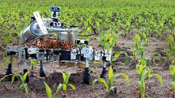

Future Uses
- In the future, robotics can be used to do surgery instead of medical doctors.
- The reason it cannnot be used now is that robots are highly inaccurate and sometimes have biases because of the data sets they are trained on.
- In the agricultural industry, robots could sow the fields and plant the seeds instead of farmers doing it.
- They could complete automize the farming process and remove the need for humans.
- Robots can analyze soil conditions, monitor crop health, and apply fertilizers and pesticides precisely.
- They can also harvest the fruits and vegetables more efficently than humans
